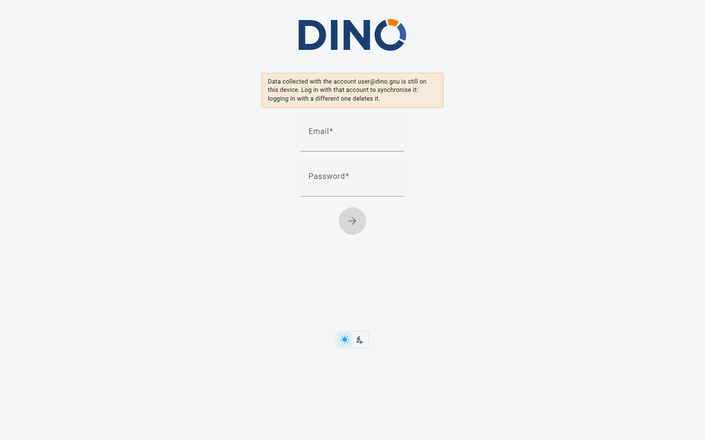

Entrar no Dino
A página de acesso é o ponto de partida para acessar o Dino. Aqui você pode entrar na sua conta, criar uma nova conta ou recuperar o acesso caso tenha esquecido sua Senha. Dependendo de como sua organização configurou o Dino, algumas das opções descritas abaixo podem não estar visíveis.

A página tem três partes:
- um cabeçalho, com o logo, o seletor de idioma e um link para o código-fonte do Dino no GitHub;
- o cartão de acesso, ao lado de uma breve introdução à plataforma e seus módulos. No celular o cartão vem primeiro e a introdução depois dele, para que você possa entrar sem precisar rolar a página;
- um rodapé, com o alternador de tema claro/escuro e a versão da aplicação.
Entrando
Use suas credenciais para acessar a plataforma. Se a sua instalação não permite que você mesmo crie uma conta, o cartão lembra você de usar a conta que seu administrador criou.
- Na página de acesso, insira seu nome de usuário ou endereço de e-mail no primeiro campo.
- Insira sua Senha no segundo campo.
- Clique em Entrar. Enquanto o Dino verifica suas credenciais, o botão exibe Entrando….
Se suas credenciais estiverem corretas, você será levado automaticamente para o Dashboard.
Se o acesso falhar, uma mensagem de erro aparecerá abaixo do formulário. Verifique novamente se seu e-mail e sua Senha estão corretos, certificando-se de que não há espaços extras, e tente de novo.
Permanecer conectado
Se a sua sessão expirar, o Dino não desconecta você e mantém os dados no dispositivo, mas a sincronização para: o botão de sincronização exibe um aviso. Clique nele: o Dino tenta renovar a sessão e, caso não consiga, oferece Ir para a página de acesso, mantendo os dados neste dispositivo, ou Mais tarde. Entre novamente com a mesma conta para sincronizar os dados.
Dados ainda não sincronizados
Se os dados coletados neste dispositivo ainda não foram sincronizados, a página de acesso informa isso, nomeando a conta que os coletou quando possível. Entre com essa conta para sincronizar os dados: entrar com uma conta diferente os exclui.
Redefinindo sua Senha
Se você esqueceu sua Senha, pode solicitar um link de redefinição por e-mail.
Recurso opcional
Esta opção pode não estar disponível na sua instalação. Se você não vir o link "Esqueceu sua senha?", entre em contato com seu administrador.
- Na página de acesso, clique em "Esqueceu sua senha?" abaixo do formulário de acesso.
- Insira o endereço de e-mail associado à sua conta.
- Clique em Enviar para enviar a solicitação.
Você receberá uma mensagem de confirmação no topo da tela. Verifique sua caixa de entrada para encontrar um e-mail contendo um link para definir uma nova Senha. Se o e-mail não chegar em alguns minutos, verifique sua pasta de spam.
Para voltar ao formulário de acesso sem redefinir sua Senha, clique em "Na verdade, eu me lembro da minha senha".
Para mais detalhes, consulte a página Redefinir Senha.
Criando uma Nova Conta
Se você ainda não tem uma conta, talvez possa se registrar diretamente pela página de acesso.
Recurso opcional
Esta opção pode não estar disponível na sua instalação. Se você não vir o link "Novo usuário? Criar nova conta", entre em contato com seu administrador para que uma conta seja criada para você.
- Na página de acesso, clique em "Novo usuário? Criar nova conta".
- Insira seu Nome completo.
- Insira seu endereço de e-mail.
- Escolha uma Senha (com pelo menos 9 caracteres).
- Digite sua Senha novamente no campo Confirme sua senha para garantir que coincidam.
- Se uma política de Privacidade for exibida, leia o texto e marque a caixa para aceitar os termos e condições. Você precisa aceitar para prosseguir.
- Clique em Criar conta.
Assim que sua conta for criada, você estará conectado e será levado automaticamente para o Dashboard.
Se você já tem uma conta, clique em "Já tem uma conta? Entrar" para voltar ao formulário de acesso.
Escolhendo uma Senha forte
Use uma Senha que você não reutiliza em outros sites. Uma mistura de letras maiúsculas e minúsculas, números e símbolos dificulta que outras pessoas a descubram.
Entrando com uma Conta Externa
Sua organização pode permitir que você entre usando sua conta Microsoft ou Google existente, em vez de uma Senha separada do Dino.
Recurso opcional
Esta opção pode não estar disponível na sua instalação. Os botões só aparecerão se seu administrador tiver habilitado o acesso externo.
- Na página de acesso, clique em "Entrar com Microsoft" ou "Entrar com Google", dependendo de qual conta você quer usar.
- Você será redirecionado para a Microsoft ou o Google para confirmar sua identidade.
- Após autorizar o acesso, você retornará ao Dino e estará conectado automaticamente.
Configurações da Página
Um pequeno conjunto de preferências de exibição está disponível diretamente na página de acesso.
Idioma
O seletor de idioma no cabeçalho, que mostra o código do idioma atual (por exemplo ENG), altera o idioma da página antes de você entrar. O Dino lembra sua escolha neste dispositivo.
Tema Claro / Escuro
Dois botões no rodapé, um sol (Modo claro) e uma lua (Modo escuro), alternam entre Modo claro e Modo escuro. A configuração tem efeito imediato.
Seleção de Plataforma
Recurso opcional
Esta opção pode não estar disponível na sua instalação. Ela só é exibida em implantações multiplataforma.
Se um menu suspenso "Escolha sua plataforma" estiver visível, selecione a plataforma à qual você quer se conectar antes de entrar. O menu suspenso listará os ambientes que seu administrador configurou.
Solução de Problemas
"There was a problem connecting to the Authentication server or your token has expired."
Warning
Sua sessão anterior expirou ou a conexão com o servidor de autenticação foi interrompida. Isso não é um erro seu. Basta inserir suas credenciais e entrar novamente.
"There was a problem during syncing process."
Warning
Ocorreu um erro ao sincronizar seus dados, o que pode estar relacionado a uma importação recente de form. Revise os form que você estava importando em busca de possíveis problemas e entre novamente. Se o problema persistir, entre em contato com seu administrador.
"Loading external authentication…" sem redirecionamento
Warning
Esta mensagem aparece brevemente ao concluir um acesso via Microsoft ou Google. Se a página não prosseguir automaticamente após alguns segundos, tente entrar novamente. Se o problema se repetir, entre em contato com seu administrador para verificar se o serviço de autenticação externa está configurado corretamente.